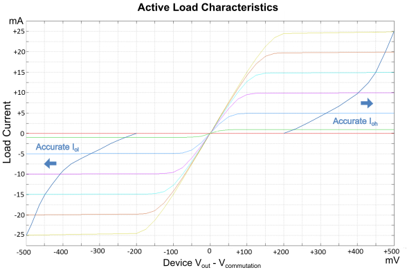

PS1600 programmable load
Currents (Ioh, Iol) |
0 to 25 mA |
Current resolution |
12.5 µA |
Current accuracy |
±75 µA ±1% of max (Ioh, Iol) |
Commutation voltage range (Vcom) |
-1.0 V to 5.5 V1) |
Voltage resolution |
1 mV |
Voltage accuracy |
±100 mV |
Sustainable total load may not exceed 1600 mA
Typical characteristics

1) -1.5 V to 6.5 V if Iol, Ioh < 1
mA